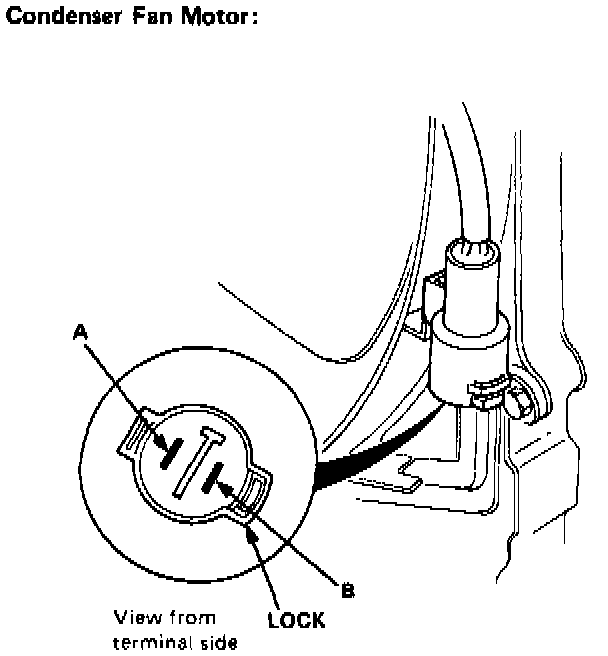

Component Test - Manual Heating and Air Conditioning

FAN MOTOR TEST
1. Disconnect the 2-P connector from the fan motor.
2. Test motor operation by connecting battery positive to the A terminal, and negative to the B terminal.
3. If the motor fails to run smoothly, replace it.